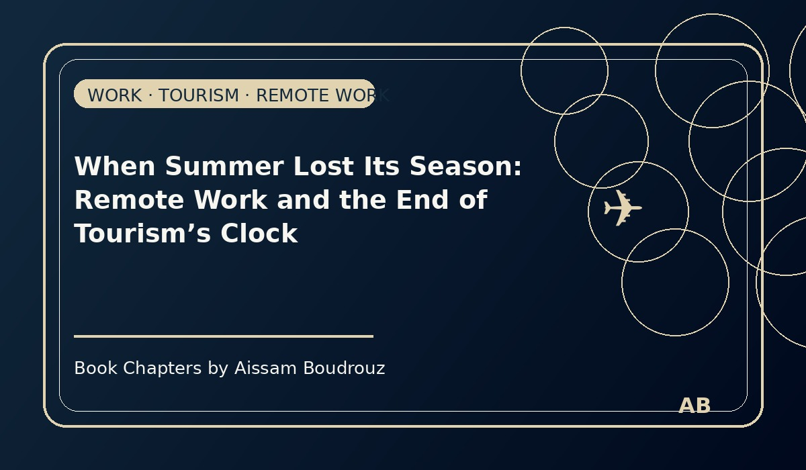

When Summer Lost Its Season: Remote Work and the End of Tourism’s Clock
Some of my best ideas arrive when I’m not even trying to think.
Not during meetings, not while staring at spreadsheets — but in quiet, ordinary moments.
Like when I’m brushing my teeth. Or, honestly… sitting in the bathroom.
That’s where this one started.
You know how after COVID, a lot of people began working from home? Some discovered that they didn’t really need the office — just Wi-Fi, coffee, and self-discipline. Companies that once swore remote work would “kill productivity” suddenly realized the opposite: sometimes people worked better when they didn’t have to commute, dress up, or force conversation near the coffee machine.
But this little change — the shift from where we work — quietly started changing something much bigger: how we live.
Page 1 – A new kind of traveler
A few months ago, I took a short trip to a coastal city. It was November — not exactly the typical vacation season. The kind of month when beaches are empty, restaurants close early, and souvenir shops wait for next summer.
Except this time, it wasn’t empty at all.
There were people everywhere: in cafés, on terraces, walking their dogs near the ocean. But they didn’t look like tourists. Many had laptops open, earbuds in, and a coffee that kept being refilled. Out of curiosity, I started talking to a few of them.
One woman smiled and said,
“Oh, I’m just working remotely for a while. Needed a change of view.”
Another man told me,
“I can do my job from anywhere, so I decided anywhere could be here.”
That’s when it clicked.
These weren’t tourists taking time off work — they were workers who had taken their work with them.
Page 2 – The quiet revolution of time
Before, travel had its rhythm. You worked all year, then waited for a small window — summer holidays, Christmas break, or maybe a long weekend — to escape. The tourism industry lived and breathed by that clock.
Summer meant high prices, crowded flights, and hotels booked months in advance.
Winter meant discounts, empty beaches, and restaurants trying to survive until the next rush.
But now, something subtle is happening.
When people can work from anywhere, time becomes flexible. The main constraint — “I can only travel when I’m off work” — begins to fade. You can go to the mountains in March, or the coast in November, and still keep your job going.
Economically, that’s fascinating. If demand for travel spreads across the year, the old pattern of “peak and off-season” starts to blur. Hotels don’t have to rely on two crazy months to survive. Local workers don’t need to find another job every winter. Prices stay more stable.
Tourism becomes less of a roller coaster — and more of a steady, sustainable rhythm.
Page 3 – The new balance
Of course, it’s not perfect. Not everyone can work remotely. Some jobs still need hands, not keyboards. And even for those who can, there are still limits — internet speed, time zones, family needs.
But still, something has changed.
The borders between work and life, between weekdays and weekends, between home and away, are melting a little. People are starting to live where they feel good — not just where their office happens to be.
And that’s not just a lifestyle trend. It’s a quiet economic revolution.
If remote work continues to grow, we might one day say goodbye to the very idea of tourism seasonality. Maybe summer will no longer “belong” to tourists. Maybe the world will stop moving in waves of crowds and instead flow smoothly — people arriving, leaving, and working wherever they feel most alive.
Maybe one day, we’ll stop asking, “When’s the best time to travel?”
Because the answer will simply be: “Anytime.”
Who knows — maybe that future starts with one person, sitting in a café, laptop open, realizing that the world has no seasons anymore.
Or maybe, as in my case, it starts with an idea that shows up… in the bathroom.
The Economic Profit of a Loaf of Bread
I was walking home for lunch, enjoying the warm afternoon sun. It was one of those slow, peaceful walks where your thoughts wander freely — until something simple snaps you back to reality.
Right as I passed by the corner store, it hit me:
“Wait… do we still have bread at home?”
No one was home to ask, so it was up to me — and my inner economist — to make a decision.
Normally, every time I buy bread, I end up finding some already there. Then, the next day, we throw away the leftovers because they’ve gone hard. But this time, something in me refused to act automatically.
That’s when the little economist in my head — let’s call him Homo Economicus — decided to do some quick mental math.
Even though I usually tell myself that “economics isn’t always rational,” the habit of weighing costs and benefits kicked in right away.
Page 1 – Two hypotheses and one loaf
I paused on the sidewalk for a minute, sunlight still warm on my face, running the numbers in my head.
If I buy the bread and it turns out we already have some, I’ll waste two loaves — and two coins.
The corner-store kind of bread can’t be stored; it gets stale by evening.
But if I don’t buy it and we actually don’t have any, I’ll come home, realize the mistake, and have to go back out again. That means losing time + two coins for the bread + probably a little tip for whoever I send to get it.
Let’s be honest: I’m a bit lazy.
If I had to send someone else to buy it, I’d probably give them five coins just to save myself the trip.
So in that case, the total loss would be around seven coins.
Page 2 – When the economist wakes up
Homo Economicus smiled inside me.
He ran the comparison quickly:
Option A – Buy the bread now:
Possible loss = 2 coins if we already have some.
Option B – Don’t buy it:
Possible loss = 7 coins if we don’t have any.
Even if both scenarios were equally likely, the expected loss was smaller with Option A.
So I bought the bread.
In economic language, that means I chose risk aversion — the path with the smaller potential loss.
In everyday language, it just means I preferred a small, certain “mistake” over a big, annoying one later.
I even smiled at myself:
“Look at me, optimizing my lunch like a rational agent.”
Page 3 – The invisible profit
When I got home, guess what? There was bread already on the table.
Did I lose? Technically, yes — two coins and a little pride.
But I also gained something invisible: the economic profit of peace of mind.
I didn’t have to worry about whether there’d be bread or not. I avoided an unnecessary errand and an argument with my own laziness.
Economists call that economic profit — the extra satisfaction or utility you get when your choice gives you more value than its alternatives.
It’s not always measured in money; sometimes it’s measured in comfort, calm, or the luxury of not moving from your chair after lunch.
So that day, walking home under the sun, I didn’t just buy bread.
I bought certainty.
And that, in its own small way, was a profitable deal. 🍞